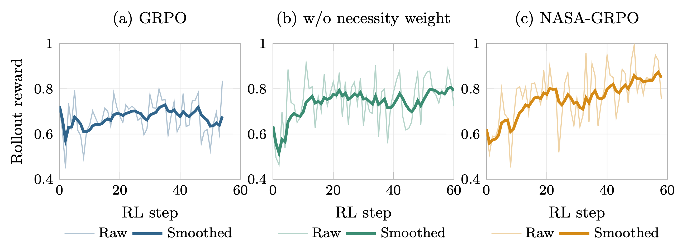
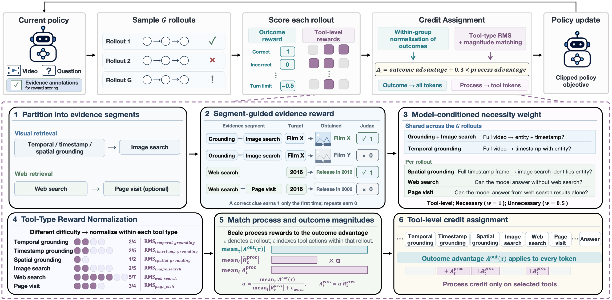
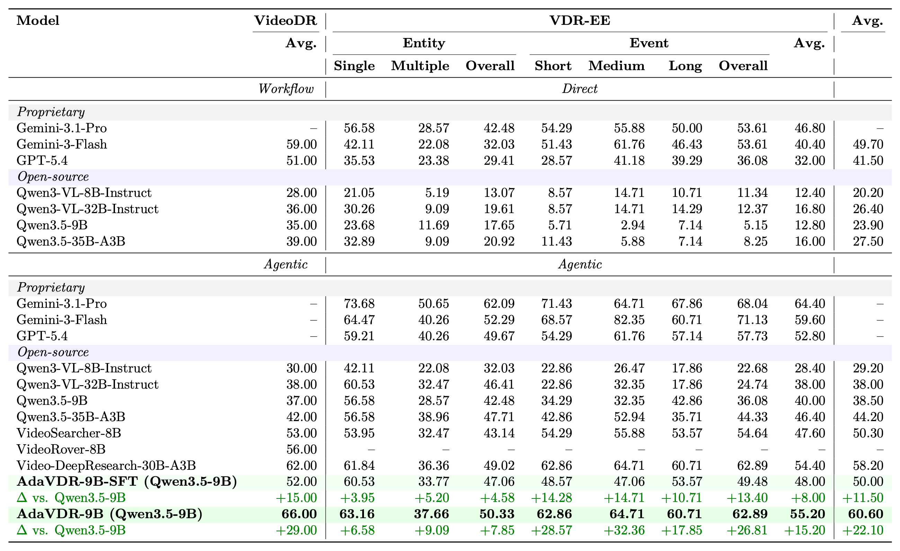

Adaptive Tool Invocation
Select temporal, timestamp, spatial, image, or web tools on demand. Skip a step whenever the answer is already supported.
Accio Lab Research
1Accio Team, Alibaba Group
2Beijing Key Laboratory of Intelligent Information Technology, School of Computer Science & Technology, Beijing Institute of Technology
*Equal contribution · †Corresponding authors
⌄accuracy on VideoDR
over Qwen3.5-9B
manually verified VDR-EE questions
diverse semantic domains
In brief
Video deep research answers complex questions by jointly understanding video content and retrieving external knowledge from the open Web. Yet, different questions demand substantially different reasoning trajectories, while uncertain grounding and retrieval results can trigger redundant tool calls and compound errors.
We introduce AdaVDR, an agent that adaptively selects tools and revises unreliable intermediate results. We develop these capabilities through two complementary components:
Training Curves
GRPO shows limited sustained improvement in later steps. The variant without necessity weighting improves early, while NASA-GRPO maintains a higher smoothed reward toward the end of the displayed training window. Held-out accuracy provides complementary evidence of policy improvement.

Method
AdaVDR constructs a variable-length trajectory for every question and only invokes another tool when the current evidence is insufficient.
Select temporal, timestamp, spatial, image, or web tools on demand. Skip a step whenever the answer is already supported.
Detect irrelevant or inconsistent evidence, identify the faulty step, and resume reasoning from a revised decision.
Our RL algorithm rewards necessary evidence acquisition with segment-guided credit and tool-type normalization. Beyond SFT, it adds 14.00 percentage points on VideoDR and 7.20 on VDR-EE.

Data Engine
Starting from diverse videos and their ASR, our pipeline discovers retrieval-relevant entities and events and follows two task-specific evidence-acquisition paths.
Locate the target with temporal, timestamp, and spatial grounding; identify it through image search; then retrieve the external attributes needed to answer the question.
Discover retrieval-relevant temporal events encoded in the video, localize their time spans, select representative visual evidence, recognize the event or scenario, and retrieve related external knowledge.
Only QA pairs requiring both video evidence and external knowledge are retained. Their evidence paths are converted into executable trajectories, checked and retried when necessary, then simplified using Qwen3.5-9B, the base model used to initialize AdaVDR-9B, for model-conditioned tool necessity filtering.

VDR-EE Benchmark
VDR-EE contains 250 manually verified questions. Every question refers to an identifiable entity or event in the video, requires both video evidence and external knowledge, is unambiguous, and has a reference answer supported by retrieved evidence.
Questions span seven domains: culture, entertainment, industry, news, scene understanding, science, and sports.
Questions are grouped as entity-centric or event-centric, then analyzed by entity multiplicity, grounded-event duration, and full-video duration.


Training

Main Results
AdaVDR-9B improves over its agentic Qwen3.5-9B base model on both benchmarks. Gains are absolute percentage-point differences.
VideoDR · AdaVDR-9B
66.00%+29.00 pp over baseVDR-EE · AdaVDR-9B
55.20%+15.20 pp over baseVideoDR · SFT
52.00%+15.00 pp over baseVDR-EE · SFT
48.00%+8.00 pp over base
Qualitative Analysis
Entity questions can omit unnecessary grounding; event questions can recover from mismatched retrieval by selecting stronger visual evidence.

Citation
@article{zhang2026adavdr,
title = {AdaVDR: Adaptive Tool Use and Reflection for Video Deep Research},
author = {Zhang, Xintong and Fan, Xiaomeng and Yan, Shilin and He, Ekko and Liu, Zicheng and Zou, Zijian and Zhang, Guannan and Wu, Yuwei and Gao, Zhi and Xue, Hongwei},
journal = {arXiv preprint arXiv:2608.25559},
year = {2026}
}